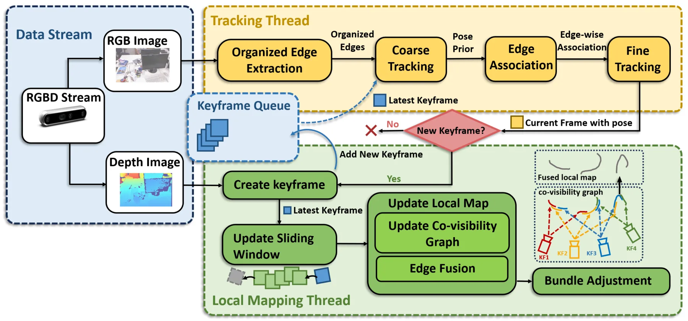
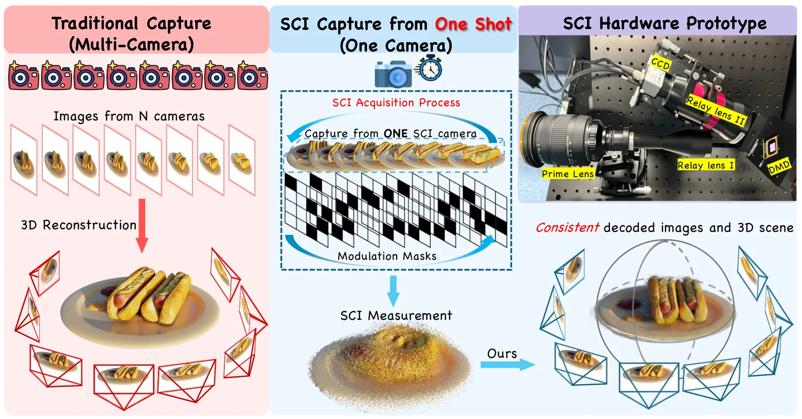
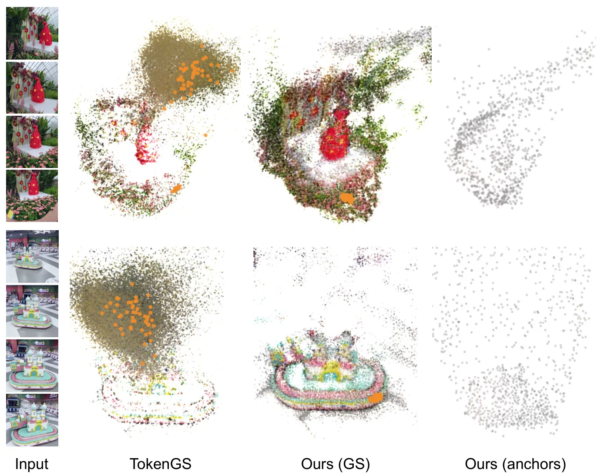
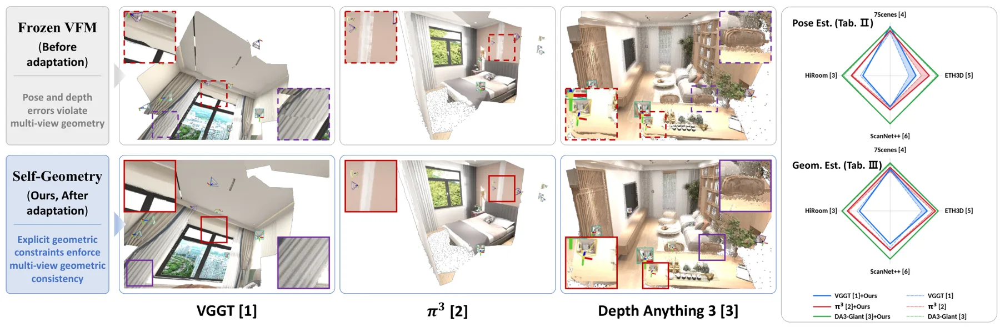

新论文 · 日期 2026-08-10 · score 15 · cs.RO
作者：Mingrui Liu, Xingxing Zuo, Renlang Huang, Minglei Zhao
评分 9.3/10
RGB-D视觉里程计边缘特征Bundle Adjustment共视图结构保持开源代码
一句话工作总结：将离散边缘组织为可跨帧关联的顺序结构，以 edge-wise registration 和保形分解式 BA 完成 RGB-D 视觉里程计。
本文提出一种只使用 organized edge features 的 RGB-D 视觉里程计系统。方法把离散边缘像素转换为有顺序的 clusters，以更充分保留纹理和结构，并通过边级跨帧关联建立 co-visibility graph。tracking 阶段使用 edge-wise residuals 实现稳健、高精度的帧间配准；joint optimization 阶段引入 shape-preserving…
This work presents a visual odometry (VO) system that leverages image edge features. Edges are spatially expressive cues commonly present across diverse environments, offering rich textural and structural info…

新论文 · 日期 2026-08-14 · score 12 · cs.CV
作者：Yanming Yang, Chenxi Song, Ping Wang, Xin Yuan
评分 8.2/10
3D Gaussian Splatting压缩成像三维重建视觉基础模型伪视图监督密度化
一句话工作总结：以 3D/2D 大视觉模型先验补偿单次 SCI 测量的信息缺失，并用 opacity-guided densification 稳定 3DGS 优化。
GS²CI 从单个 snapshot compressive imaging（SCI）measurement 重建高质量三维场景。主流程将 measurement-derived 3D vision foundation model initialization 与 SCI-aware Gaussian optimization 结合；coarse stage 收敛后，再由辅助 2D VFM 在合成视角提供 pse…
Snapshot Compressive Imaging (SCI) offers an efficient solution for high-speed video acquisition and, under exposure-time camera--scene relative motion, multi-view scene capture by compressing temporal or spat…

新论文 · 日期 2026-08-13 · score 11 · cs.CV
作者：Wenyu Li, Sidun Liu, Tongrui Hu, Peng Qiao
评分 8/10
前馈式3DGS空间锚点多视图聚合Gaussian Query新视图合成空间一致性
一句话工作总结：给 Gaussian queries 绑定可逐层更新的三维中心与支持半径，使多视图证据聚合和 Gaussian 解码保持局部空间一致。
LocusGS 针对 query-based feed-forward 3DGS 中同一 query 生成的 Gaussians 分散到远距离场景区域、空间一致性弱的问题，为每个 Gaussian query 增加由 center 与 support radius 组成的 3D anchor state。该状态在 decoder layers 中逐步更新，并贯穿 query interaction、多视图 feat…
Recent query-based feed-forward 3DGS methods represent a scene using learnable queries, each aggregating multi-view evidence and decoding a group of Gaussians. Ideally, different queries should specialize in c…
新论文 · 日期 2026-08-13 · score 4 · cs.CV
作者：Sanjay Bhargav Dharavath, Hanvitha Saraswathi Mukkamala, Faizan Farooq Khan, Ioannis Kakogeorgiou
评分 7.7/10
驾驶数据集新视图合成相机位姿估计Structure-from-Motion多载具动态场景
一句话工作总结：以车、踏板车和无人机的同步异轨迹构造大视差动态驾驶 benchmark，并用人工像素对应核验 SfM 相机位姿。
MV2 是用于动态城市驾驶 novel view synthesis 的 Multi-View Multi-Vehicle dataset 与 benchmark。数据由汽车、踏板车和无人机沿不同但同步的轨迹采集；在一个载具的相机流上训练、另一载具上测试，从而形成比单轨迹数据集更大的 viewpoint variation。全部序列通过 Structure-from-Motion 注册，并以人工 pixel-lev…
Differentiable rendering has advanced novel view synthesis (NVS), yet applying it to real-world driving remains difficult due to sparse capture viewpoints, dynamic objects, and limited multi-trajectory data. W…

新论文 · 日期 2026-08-11 · score 4 · cs.CV
作者：Seokhyun Youn, Dahyeon Kye, Sung-Ho Bae, Jihyong Oh
评分 8.6/10
测试时适配多视图几何相机位姿极线约束LoRA三维基础模型
一句话工作总结：以像素对应构造伪真值，在测试时通过多视图与极线一致性损失和 LoRA 修正 foundation model 的位姿与几何预测。
Self-Geometry 是一种面向 3D vision foundation models 的 GT-free、plug-and-play test-time adaptation pipeline，使用 2D pixel correspondences 作为 pseudo ground-truth，直接施加显式多视图几何约束。Geometric Disentanglement Optimization 联合…
Recent Vision Foundation Models (VFMs) predict depth, camera pose, and pointmap in a single forward pass without per-scene optimization, achieving strong generalization. However, enforcing explicit multi-view…